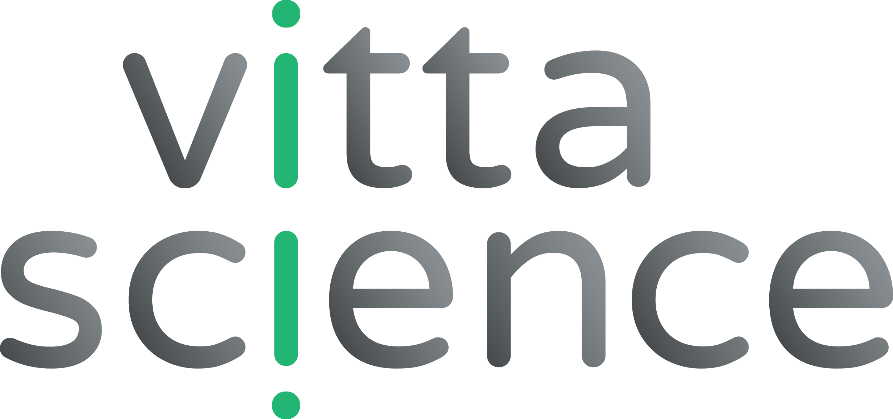

Curriculum
🎓 Education
PhD Candidate in Applied Mathematics
Centre Borelli, ENS Paris-Saclay & Michelin
Thesis: Convergence acceleration of a nonlinear solver through physics-informed statistical learning
Supervisors: Mathilde Mougeot, Florian De Vuyst, Thibault Dairay
2024–2027
Engineering Degree in Mathematical Engineering & Data Science
Bachelor’s and Master’s Degree in Mathematics
Polytech Clermont-Ferrand
2021–2024
Classe Préparatoire MPSI-MP
Lycée La Fayette, Clermont-Ferrand
Ranked on CCINP final exam
2019-2021
French Baccalauréat in Mathematics
Lycée Virlogeux, Riom
European Section (English & Mathematics focus)
2019
📚 Teaching
Teaching Assistant Méthodes Mathématiques (TD, 28h)
Bachelor level courses (L3). PSL Research University, Paris.
2025
🧪 Work Experience
Internship at Michelin (6 months) Feb–Aug 2024
Physically informed learning methods for PDEs. Dimensionality reduction, convergence acceleration of Newton solvers.
Physically informed learning methods for PDEs. Dimensionality reduction, convergence acceleration of Newton solvers.

Internship at EPFL (4 months) Apr–Aug 2023
Soil Mechanics Lab — Geomechanical modeling of rock systems. Optimization, Machine Learning, cluster computing.
Soil Mechanics Lab — Geomechanical modeling of rock systems. Optimization, Machine Learning, cluster computing.

Web Editor at Vittascience (6 weeks) Summer 2022
Writing SEO-optimized product descriptions for an educational platform.
Writing SEO-optimized product descriptions for an educational platform.